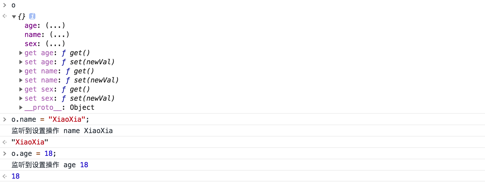
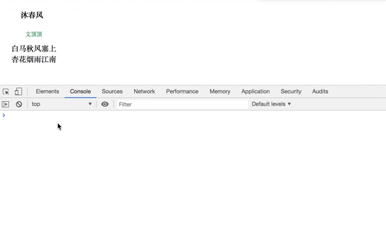

本文将继续讨论 `前端框架\模板中` 文本插值的实现方案，主要关注当数据变化后页面标签也实时更新功能，需要指出的是本文面向的是初学者的入门级文章仅仅从[ ( 结果 )...( 实现
) ]()的角度来讨论解决问题的过程，侧重点并不在于技术的深度也不探讨框架的内部架构和实现原理。
**数据和标签的动态响应**
在 上文中..文本插值 我们已经讨论过如何把数据映射到页面标签的问题，并且给出了简陋的Class结构，对于前端框架来说标签中插值部分能够跟随数据实时动态更新是标配的功能，现在我们来考虑下这个功能要如何来实现。下面是 Vue官网 对响应式渲染的说明。
1
2
3
4
| 我们已经成功创建了第一个 Vue 应用！
看起来这跟渲染一个字符串模板非常类似，但是 Vue 在背后做了大量工作。
现在数据和 DOM 已经被建立了关联，所有东西都是响应式的。我们要怎么确认呢？
打开你的浏览器的 JavaScript 控制台 (就在这个页面打开)，并修改app.message的值，你将看到上例相应地更新。
|
简单点说，我们现在要考虑的是当数据(data的成员)发生变化的时候，页面挂载标签中对应的部分也要能够实时更新。如何实现呢？自然而然的我们能够想到 —— 监听数据的变化，当数据变化的时候通知更新UI ( 重新计算和渲染 ) 即可。
**监听对象成员的读写操作**
如何监听数据的变化呢？要知道数据都作为实例对象的成员(属性)而存在的。监听对象(对象属性)的读写操作以利用Object的静态方法Object.defineProperty来实现，下面简单介绍其基本使用。
1
2
3
4
5
6
7
8
9
| var o = {name: "wendingding" };
Object.defineProperty(o, "name", {
value: "文顶顶",
configurable: true,
enumerable: true,
writable: true
})
console.log(o.name);
|
❏ 语法：Object.defineProperty(target,key,options)
❏ 参数：
1
2
3
| * target 目标对象
* key 对象(成员)属性名称
* options 对象属性描述对象
|
❏ 用途：更细粒度的定义对象以控制指定属性的值、是否可配置(删除)、是否可枚举以及是否可写。
1
2
3
4
5
6
7
8
9
10
11
12
| Object.defineProperty(o, "name", {
configurable: true,
enumerable: true,
get() {
console.log("监听到-执行读取操作");
},
set(newValue) {
console.log("监听到-执行写入操作", newValue);
}
})
console.log(o.name);
o.name = "夏";
|
当我们试图访问对象属性的时候可以在get方法中拦截，当尝试设置对象属性的时候能够在set方法中拦截，到这里我们已经掌握了一种可以监听对象中属性读写操作的方式。Object.defineProperty方法只能够对对象中的单个标签进行监听，而我们框架的响应模型中需要对对象中的多个数据(构造函数参数对象中data的所有成员)的写操作进行监听，怎么处理呢？且看下面的实现代码。
1
2
3
4
5
6
7
8
9
10
11
12
13
14
15
16
17
18
19
20
21
|
var o = {name: "xx",age: 18, sex: "女"};
function definePropertyReact(o, key, val) {
Object.defineProperty(o, key, {
configurable: true,
enumerable: true,
get() {
console.log("监听到读取操作", key);
return val;
},
set(newVal) {
console.log("监听到设置操作", key, newVal);
val = newVal;
}
})
}
for (const key in o) { definePropertyReact(o, key, o[key]) }
|
当程序运行后，我们可以在控制台通过o.name的方式访问和修改属性的值，下面是执行的结果。

**动态响应的代码实现**
现在我们已经解决了对象属性**写操作**监听的问题，剩下的就是当对象中指定属性的写操作被触发时通知让UI更新即可，下面给出完整的Manager实现和演示代码。
1
2
3
4
5
6
7
8
9
10
11
12
13
14
15
16
17
18
19
20
21
22
23
24
25
26
27
28
29
30
31
32
33
34
35
36
37
38
39
40
41
42
43
44
45
46
47
48
49
50
51
52
53
54
55
56
57
58
59
60
61
62
63
64
65
|
<div id="app">
<h4>{{title}}</h4>
<div style="font-size: 12px;color:#195;margin:10px 30px"> {{author}}</div>
<div> {{textA}}</div>
<div> {{textB}}</div>
</div>
<script>
class Manager {
constructor(o) {
this.el = document.querySelector(o.el);
this.rootInnerHTMLCopy = this.el.innerHTML;
this.keys = [];
for (let key in o.data) {
this.keys.push(key);
this.definePropertyReact(this, key, o.data[key])
}
this.ObserverPropertyChange();
}
definePropertyReact(o, key, val) {
let self = this;
Object.defineProperty(o, key, {
configurable: true,
enumerable: true,
get() {
return val;
},
set(newVal) {
console.log("监听到设置操作", key, newVal);
val = newVal;
self.ObserverPropertyChange();
}
})
}
ObserverPropertyChange() {
this.el.innerHTML = this.rootInnerHTMLCopy;
this.keys.forEach(ele => {
let reg = new RegExp(`{{2}\\s*${ele}\\s*}{2}`, "g");
this.el.innerHTML = this.el.innerHTML.replace(reg, this[ele]);
});
}
}
let app = new Manager({
el: "#app",
data: {
title: "沐春风",
textA: "白马秋风塞上",
textB: "杏花烟雨江南",
author: "文顶顶"
}
})
</script>
|


---